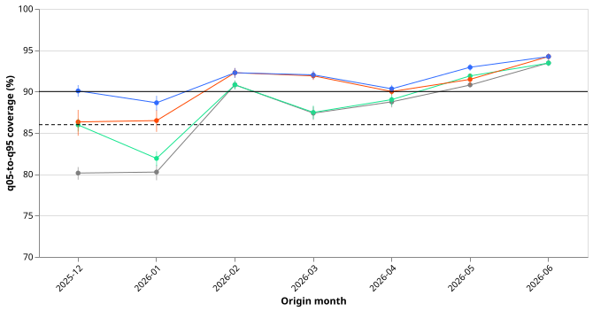
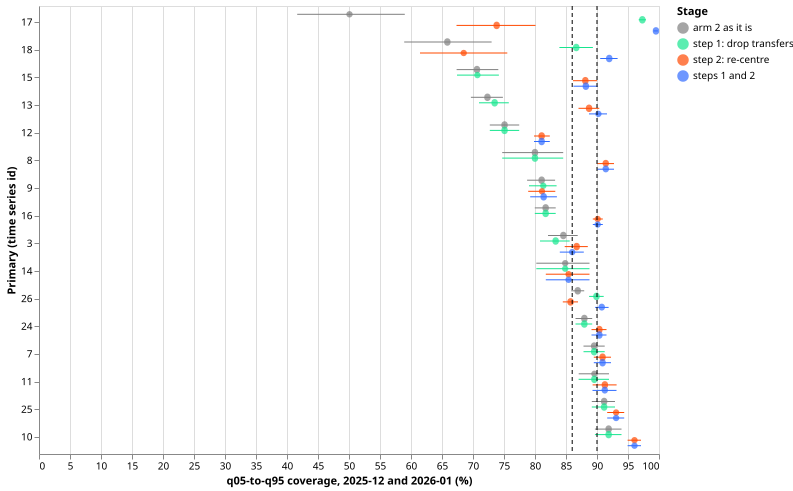
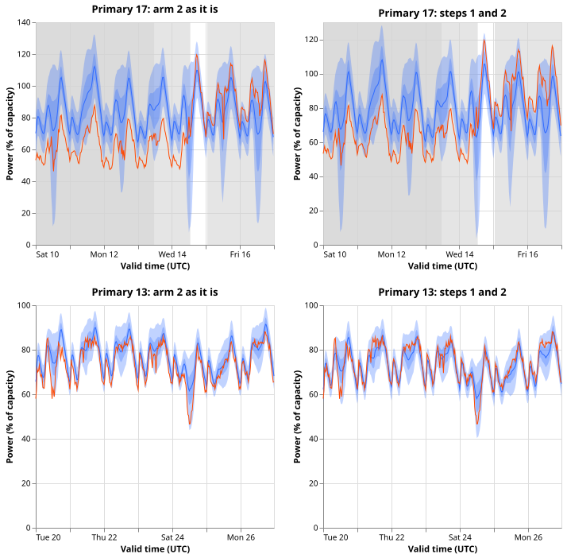
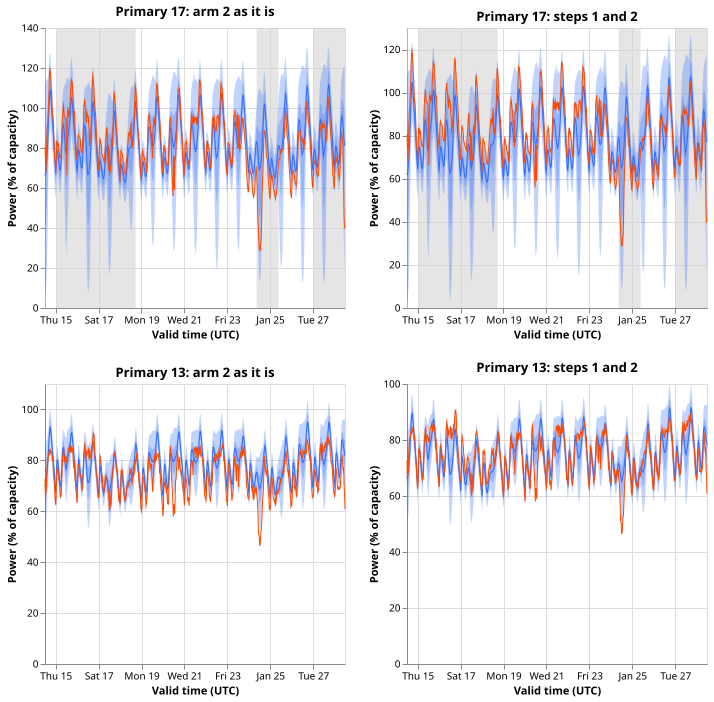

Do the 90% bands of the normal-running Primaries miss in winter because of median error and load transfers, or because the bands are too narrow?
The 90% bands of the normal-running Primaries miss in winter mostly because the median forecast is off by a different amount each month, and partly because of load transfers; the bands themselves are close to the right width. We asked why the 16 Primary substations' normal-running forecasts cover only 80% of the observed power inside their 5%-to-95% bands (the q05 and q95 quantiles) in December 2025 and January 2026, where 90% is promised. The normal-running output assumes the usual electricity network configuration. We took the bands as stored (after experiment 683 widened them by a factor fitted on earlier months). Step 1 dropped the half-hours inside labelled and verified load transfers, where demand moves from one substation to another. Step 2 moved each band by that month's observed median error, which no forecast could know in advance. Coverage rose to 90.1% and 88.6%, and the factor by which the bands would still need widening fell to about 1. The prediction written before the run held (coverage above 86% in both months), so the stop rule, which would have justified modelling the band width, did not fire.




- Arms and steps. Arm 2 of experiment 683 (the walk-forward scale) is the object; the stored quantiles (arm 0) are the reference. Step 1 drops the half-hours whose valid time lies inside a span (the 34 labelled events of experiment 580's label table in the period, plus its verified transfers) at the Primary the span names. Step 2 adds, to all 11 quantiles, the median of observed minus the median forecast per series and origin month. Steps 1 and 2 are both diagnostics: step 2 uses the rows it scores.
- Rows. The normal-running output of 16 Primaries, origin months 2025-12 to 2026-06, scored rows of experiment 683 with valid times before 2026-07 (74,406 rows from late June origins are left out, so 2026-06 differs from experiment 683's figure; earlier months match it exactly). Step 1 masked 39,163 of 332,611 half-hours in 2025-12 and 23,586 of 333,312 in 2026-01 (11.8% and 7.1%). We reused the stored forecasts, fitted nothing, scored cleaned observed power, and left the final-test window untouched.
- Coverage, pooled, 95% day-block bootstrap intervals (arm 2): as it is 80.1% (79.3 to 80.9) and 80.3% (79.3 to 81.1); step 1 alone 86.0% (85.2 to 86.8) and 81.9% (81.0 to 82.8); step 2 alone 86.3% (84.7 to 87.8) and 86.5% (85.1 to 87.8); both 90.1% (89.4 to 90.8) and 88.6% (87.7 to 89.5), for 2025-12 and 2026-01. February to June as it is: 90.8%, 87.4%, 88.8%, 90.8%, and 93.5%; after both: 92.3%, 92.0%, 90.3%, 92.9%, and 94.2%.
- Share of the shortfall from 90% explained (2025-12, 2026-01): step 1 alone 59% and 17%; step 2
alone 63% and 64%; both 101% and 86%. The order changes the split (step 2 after step 1: 42% and
69%; step 1 after step 2: 38% and 22%), because the transfers are also a large error in the
median. Intervals are in
tables/explained.csv. - Tails, arm 2, both steps (2025-12, 2026-01): below q05 5.4% and 6.5%; above q95 4.6% and 4.9% (nominal 5% each). As it is: below 4.7% and 11.6%; above 15.2% and 8.1%. The mix of one-sided misses changes month to month, which is the sign of a median level that moves.
- Series below 0.86 after both steps: 2025-12: Primaries 12 (80.2%) and 14 (75.4%); 2026-01: Primaries 3 (83.3%), 9 (74.9%), 11 (84.4%), and 12 (81.9%). Primaries 17 and 18 (the verified transfer) go from 50% and 66% as it is to 99.5% and 92.0% over the two months.
- Width against residuals, pooled Primaries, both winter months. The scale that would make 90% of observations fall inside the band is 1.33 to 1.38 as it is and 0.99 to 1.04 after both steps, in each of the four lead bands (days 0 to 1, 1 to 3, 3 to 7, 7 to 14). The ratio of the median band half-width to the empirical half-width of the residuals is 0.50 as it is and 0.66 after both steps, outside the 0.75 to 1.25 range of P4. The ratio compares a median over rows with a spread that mixes wide and narrow bands, so the needed scale is the fairer verdict on width.
- Sensitivities (reported, not deciding). One shift per series, origin month, and lead band gives 90.1% and 89.4%. Widening the mask to the fitted spans of experiment 580 and to experiment 685's candidate events gives 91.4% and 88.4% after both steps, and 88.6% and 81.5% for step 1 alone.
- Predictions. P1 held (90.1% and 88.6% exceed 86%). P2 held in point estimate in both months (63% against 59% in December, where the intervals overlap, and 64% against 17% in January). P3 held (at least two series below 86% in 2025-12 or 2026-01 after both steps, listed above). P4 failed as written (ratio 0.66), because the ratio compares a median over rows with a spread that mixes wide and narrow bands.
- Checks. The stored files hold quantiles only, so there is no mean forecast. The median's mean absolute error in the two winter months falls from 7.24 to 6.39 percentage points of capacity under step 2 and to 5.71 under both steps. Its mean signed error is 0.67 as stored and 0.15 after both steps. The coverage contrasts and the median-error contrasts therefore point the same way. We made no leave-one-out run: the step 1 gain in 2025-12 is concentrated at Primaries 17 and 18, the verified transfer, and in 2026-01 step 2 carries the gain. No control failed, the result agrees with the lesson of experiment 683, the stages nest in the expected order, and no later experiment's design depends on this result yet, so no audit was run.
- Open tension. After both steps the January misses are still one-sided (6.5% below q05 against 4.9% above q95). The page drops the width model on the coverage and the needed width factor, not on symmetric tails.
- Caveats. The mask uses labelled events that experiment 580 could not confirm in the telemetry (only the 2025-12-29 to 2026-01-13 transfer was confirmed), and the event labels of National Grid Electricity Distribution (NGED) are incomplete, so the share explained by transfers is not a count of real events and clean rows may hold unlabelled events. The shift is computed on the month it scores, so it measures how much median error there is, not a gain a forecast could realise. The horizon is 1 to 14 days; the final-test window 2026-07 to 2026-10 is untouched. The July and August 2026 miss at Primaries 13 and 16 is not examined here: it is an unexplained level miss, and the candidate events of experiment 685 are candidates, not labels.
- Reuse and code. Imports
e00668_score_lib(experiment 668) ande00683_calibrate(experiment 683); code inml-experiments/00688-*/(e00688_diagnose.py,e00688_tables.py,e00688_checks.py,e00688_figures.py). - What to try next. A correction to the median level that a forecast could compute during the month, scored with the same stages; a mask of verified transfers only, to separate confirmed events from unconfirmed labels.